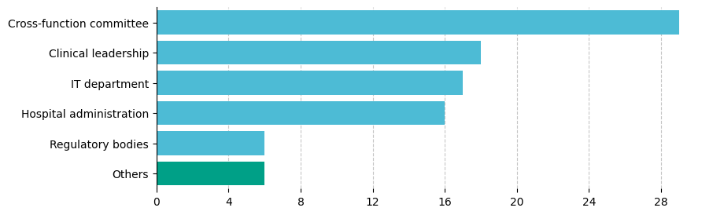

Environment Scan of Generative AI Infrastructure for Clinical and Translational Science
This study reports a comprehensive environmental scan of the generative AI (GenAI) infrastructure in the national network for clinical and translational science across 36 institutions supported by the Clinical and Translational Science Award (CTSA) Program led by the National Center for Advancing Translational Sciences (NCATS) of the National Institutes of Health (NIH) at the United States. With the rapid advancement of GenAI technologies, including large language models (LLMs), healthcare institutions face unprecedented opportunities and challenges. This research explores the current status of GenAI integration, focusing on stakeholder roles, governance structures, and ethical considerations by administering a survey among leaders of health institutions (i.e., representing academic medical centers and health systems) to assess the institutional readiness and approach towards GenAI adoption. Key findings indicate a diverse range of institutional strategies, with most organizations in the experimental phase of GenAI deployment. The study highlights significant variations in governance models, with a strong preference for centralized decision-making but notable gaps in workforce training and ethical oversight. Moreover, the results underscore the need for a more coordinated approach to GenAI governance, emphasizing collaboration among senior leaders, clinicians, information technology staff, and researchers. Our analysis also reveals concerns regarding GenAI bias, data security, and stakeholder trust, which must be addressed to ensure the ethical and effective implementation of GenAI technologies. This study offers valuable insights into the challenges and opportunities of GenAI integration in healthcare, providing a roadmap for institutions aiming to leverage GenAI for improved quality of care and operational efficiency.
Which stakeholder groups are involved in decision-making and implementation of GenAI?
Who leads the decision-making process for implementing GenAI applications?



Acknowledgement
This work was supported by the National Center for Advancing Translational Sciences (NCATS) of the National Institutes of Health (NIH) under grant numbers UL1TR002384, UM1TR004789, UL1TR001412, UL1TR001449, ULTR002345, UM1TR004404, UL1TR001866, UM1TR004909, and UL1TR001873; National Library of Medicine (NLM) of NIH under grant numbers T15LM007079, T15LM012495, R25LM014213; and the National Institute on Alcohol Abuse and Alcoholism of NIH grant numbers R21AA026954 and R33AA0226954. This study was also funded in part by the Department of Veterans Affairs and NIH Intramural Research Program. The content is solely the responsibility of the authors and does not necessarily represent the official views of the NIH.